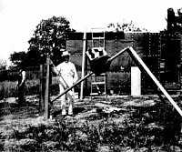
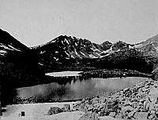

The Scientist's "Retina"

Princeton students and faculty embarked on a number of astronomical expeditions during the nineteenth century. Photography was used to document the explorers' findings. Here, Professor William Libbey (Princeton Class of 1877) stands next to the camera he used to photograph a solar eclipse in Wadesboro, North Carolina in 1900.

Princeton students and faculty also embarked on a number of western geological expeditions during the nineteenth century. This photograph, taken in Colorado on the first geological expedition of 1877, depicts the western slope of the continental divide.
 Go to the next section of photographs.
Go to the next section of photographs.
Return to the Mudd Library home page.